Structure Assembly — Kibot1 AR (English translation; figures extracted from the Chinese PDF)
1. M4×40 screw, idler wheel, M4 nut.
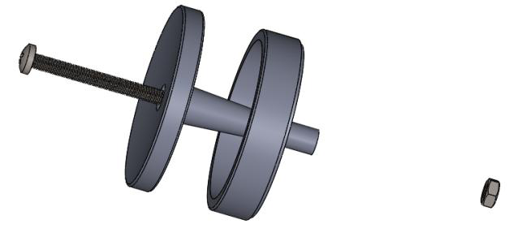
2. Pass the screw through the center and assemble.
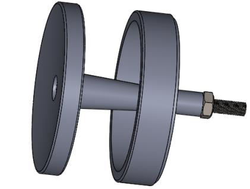
1. Take out the side plate.
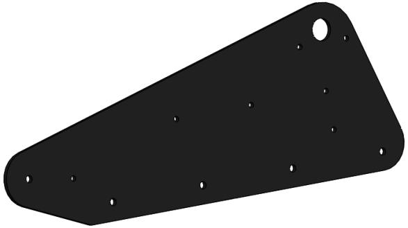
2. Mount the assembled drive/idler wheels onto the side plate.
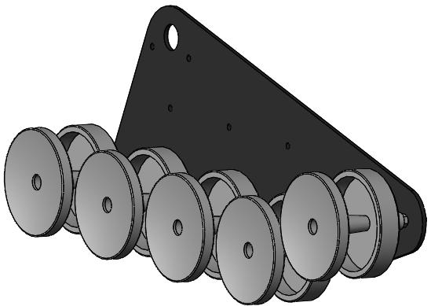
3. Secure with M4 lock nuts. (Note: Make sure the idler wheels can spin freely and that they are aligned in a straight line.)
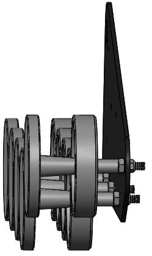
4. Mount the gear motor onto the left side plate.
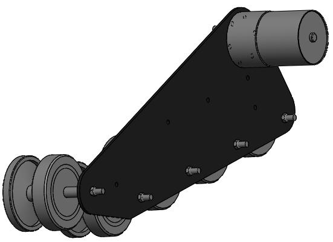
5. Fix the motor with M3×8 screws.
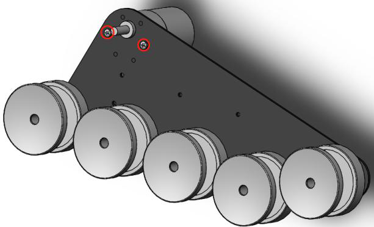
6. Install the track; seat the idler wheels into the track guides.
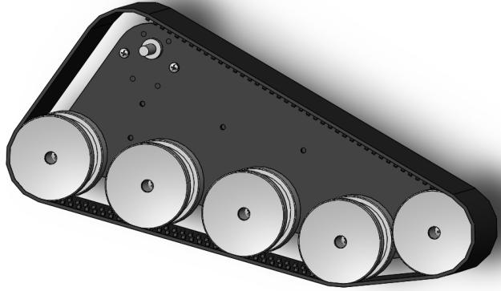
7. Install the drive wheel.
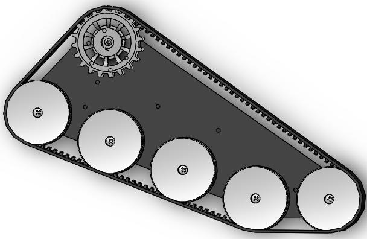
8. Use an M3×6 screw; tighten against the flat side of the motor output shaft.
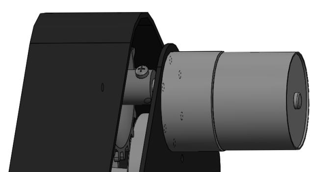
1. Take out the side plate.
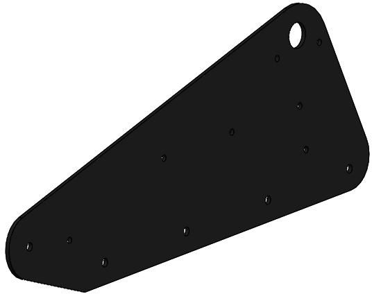
2. Mount the assembled drive/idler wheels onto the side plate.
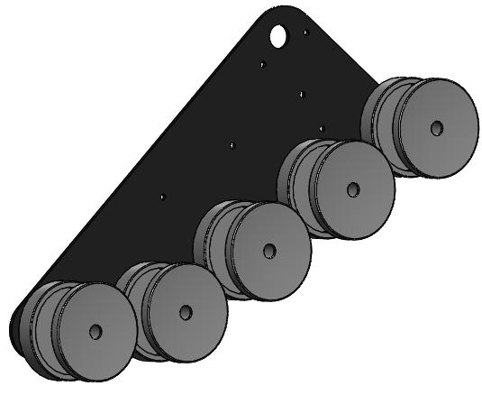
3. Secure with M4 lock nuts. (Note: Make sure the idler wheels can spin freely and that they are aligned in a straight line.)
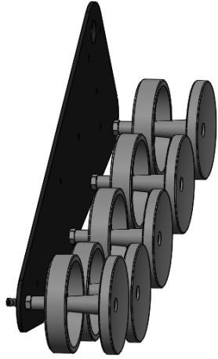
4. Mount the gear motor onto the side plate.
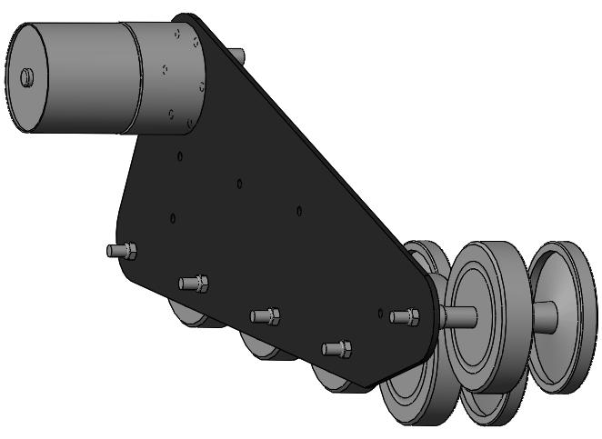
5. Fix the motor with M3×8 screws.
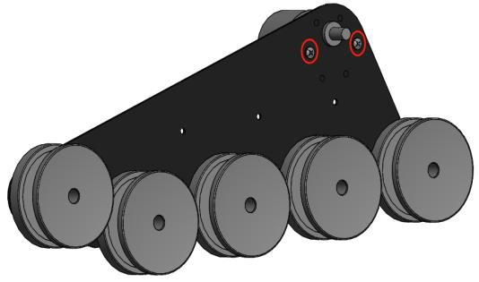
6. Install the track; seat the idler wheels into the track guides.
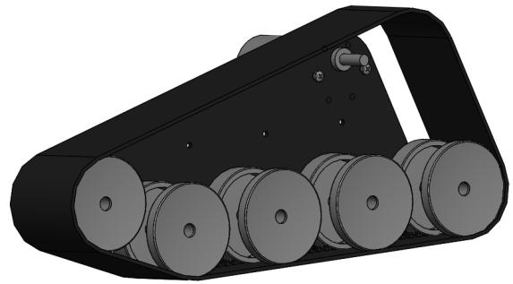
7. Install the drive wheel.
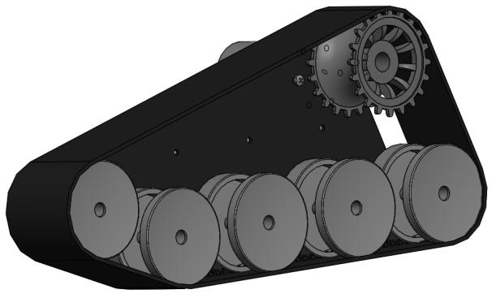
8. Use an M3×6 screw; tighten against the flat side of the motor output shaft.
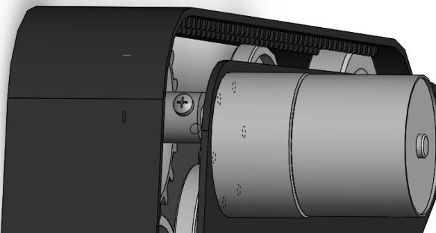
1. Prepare the assembled left and right wheel assemblies.
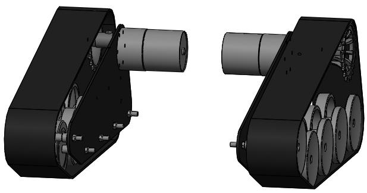
2. Install the top plate.
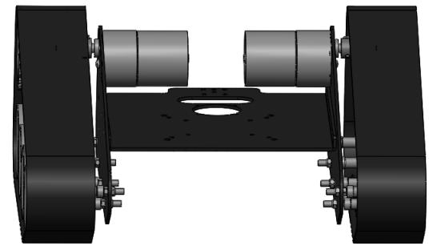
3. Secure with M3×6 self-tapping screws. (Secure both sides.)
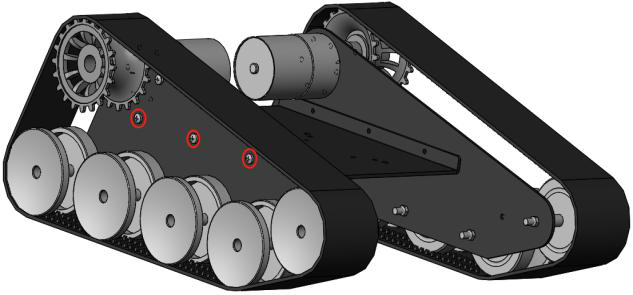
4. Install the bottom plate.
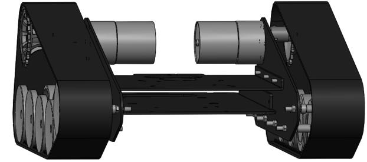
5. Secure with M3×6 self-tapping screws. (Secure both sides.)
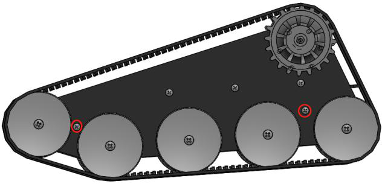
6. Chassis assembly complete.
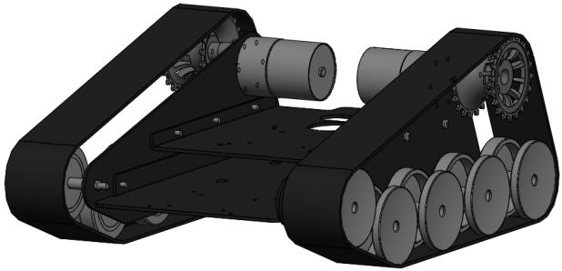
How to center a servo: Power on to reset/center.
Items needed: Control board, lithium battery, and the servo to be centered.
Steps: (see also the servo centering video)
Servo interface / control board reference
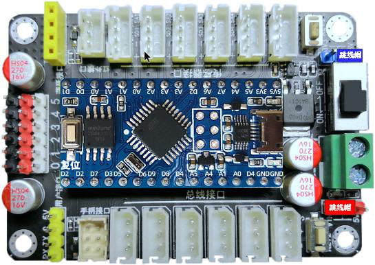
Servo port wiring
Claw half-open — front view
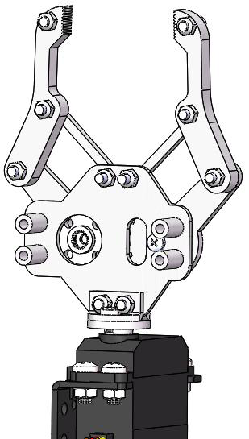
Claw half-open — with servo
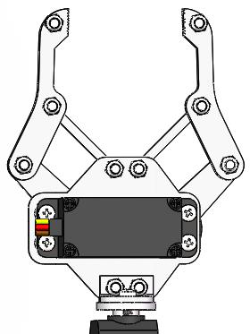
1. Take out the small disc.
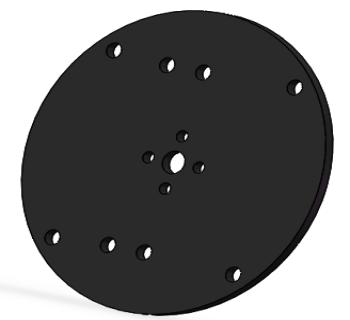
2. Install the metal servo horn; attach the horn to the small disc.
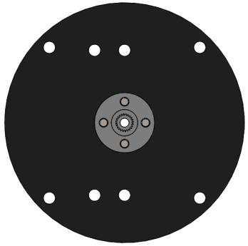
3. Use 4× M3×6 screws; tighten from the other side.
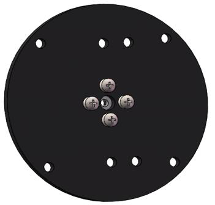
Note: The metal servo horn has internal threads — tighten with screws only; no nuts are needed.
No figure in the original PDF for this step
1. As shown, mount the servo bracket onto the small disc.
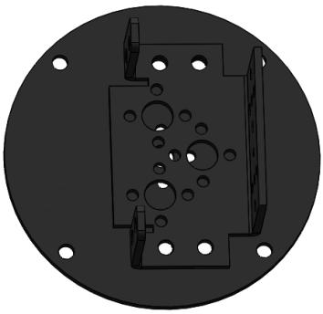
2. Install M4×10 screws and tighten with M4 nuts.
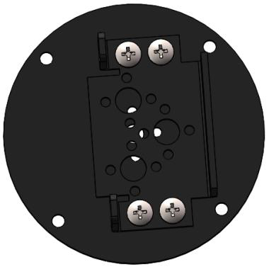
1. Mount the small disc with the servo horn onto the large bearing. The servo horn must face outward.
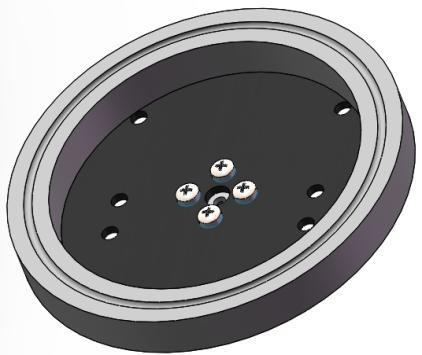
2. Mount the small disc with the servo bracket onto the large bearing, on the opposite side from the other small disc.
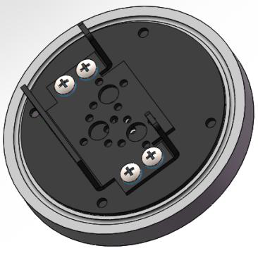
3. Tighten with M4×18 screws.
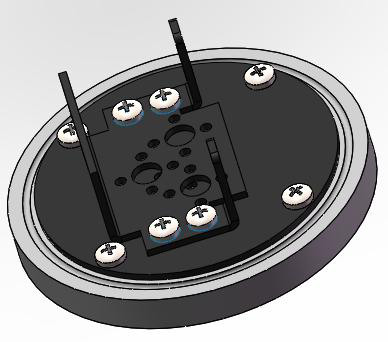
4. Secure with M4 nuts.
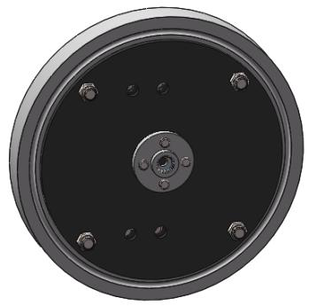
1. Install the first ring.
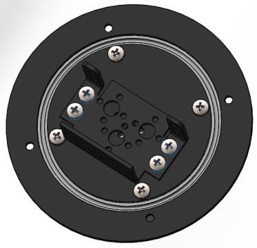
2. Pass M4×35 screws through.
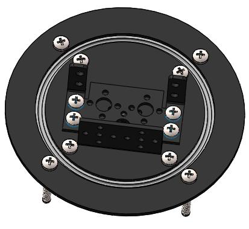
3. Install the other ring.
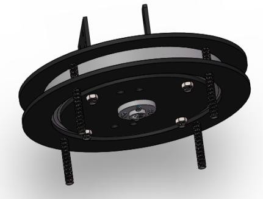
4. Secure with M4×13 copper posts/standoffs.
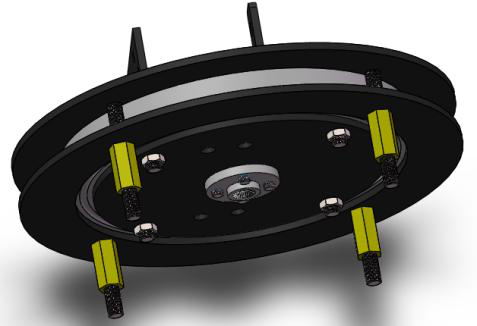
1. Take out the large disc.
2. Insert a TBS2701 servo into the disc. Insert from one side of the servo shaft; keep the shaft centered in the disc.
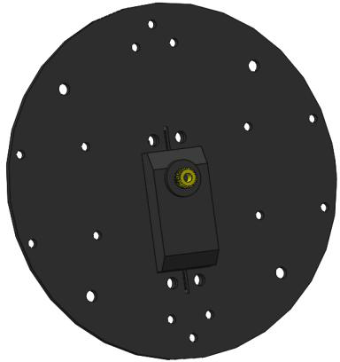
3. Fix the servo with M4×10 screws.
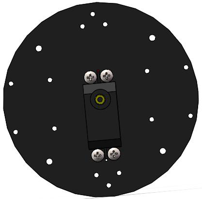
4. Secure with M4 nuts.
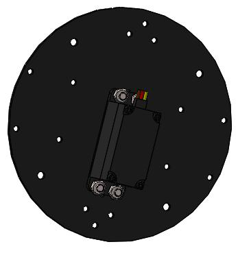
1. Seat the large disc (with servo) onto the small disc (with servo horn). (Mind the servo position and the servo bracket position.)
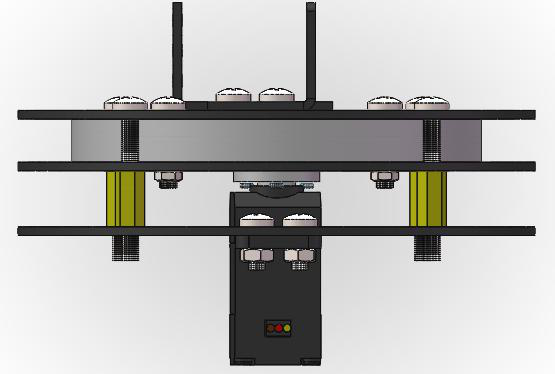
2. Install the M4×35 copper posts/standoffs.
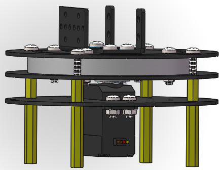
3. Install the cup bearing; attach the large end to the servo bracket.
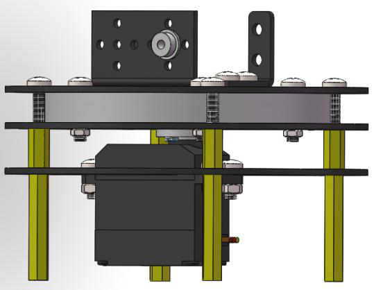
4. Fix with M3×8 screws.
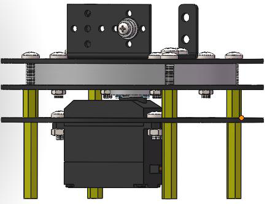
5. Install the M3 nut.
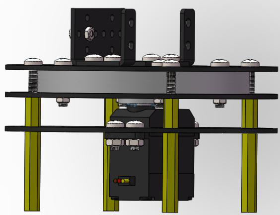
6. Install a TBS2701 servo; keep the servo shaft and cup bearing in a straight line.
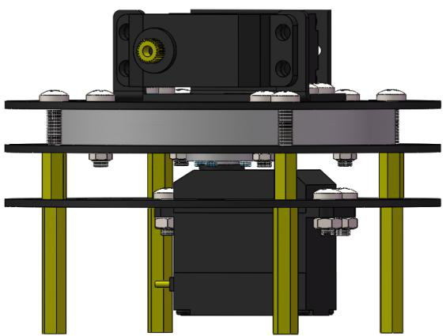
7. Install M4×10 screws.
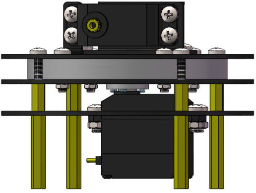
8. Install M4 nuts.
9. Install the servo horn (cross-shaped / “+” horn).
1. Assemble the two long U-brackets.
2. Install 4× M3×8 screws.
3. Install 4× M3 nuts.
1. Join the L-bracket and long U-bracket; attach the L-bracket’s short edge to the long U.
No figure in the original PDF for this step
2. Secure with M3×6 screws and M3 nuts.
No figure in the original PDF for this step
3. Place the servo bracket. Attach the L-bracket’s long edge to the servo bracket.
4. Install M3×8 screws and M3 nuts; tighten from the inside outward.
5. Install the cup bearing. Attach the large end of the bearing to the servo bracket.
6. Fix the cup bearing with M3×8 screws.
7. Secure with M3 nuts.
8. Install a TBS2701 servo. (Servo shaft and cup bearing on the same straight line.)
9. Secure with M4×10 screws.
10. Secure with M4 nuts.
11. Secure the servo horn. (Preferably use a cross-shaped / “+” horn.)
Completed L-bracket + servo sub-assembly
1. Join the two servo brackets together.
2. Secure with M3×6 screws and M3 nuts.
3. Install the cup bearing; attach the large end to the servo bracket.
4. Fix the bearing with M3×8 screws and M3 nuts.
5. Place a TBS2701 servo. Keep the servo shaft and cup bearing on the same straight line.
6. Fix the servo with M4×10 screws and M4 nuts.
7. Place another TBS2701 servo. Mind the relative positions of the two servos.
8. Fix the servo with M4×10 screws and M4 nuts.
9. Install the servo horn for the upper servo.
10. Install the servo horn for the lower servo.
1. Mount the long U-bracket assembly onto the rotating base.
2. Secure with M3×6 screws.
3. Install the L-shaped bracket assembly.
4. Secure with M3×6 screws.
5. Install the servo bracket assembly.
6. Secure with M3×6 screws.
7. Secure with M3×6 screws. (Ensure the servo horn will not rotate; if it rotates, re-center again.)
8. Fix the alloy robotic claw onto the servo horn. Mind the claw and servo positions.
9. Fix the claw with M3×6 screws.
10. Keep the claw half open while inserting the servo.
11. Insert the TBSN-K15 claw-dedicated metal gear servo; insert it while the servo is centered.
12. Secure with M3×6 screws.
13. Secure the servo horn with M3×6 screws.
14. Robotic arm assembly complete.
1. Mount the robotic arm onto the tracked vehicle chassis. The bottom-most servo wire should face rearward.
2. As shown, the claw servo should also face rearward.
3. Install M4×10 screws through the reserved holes in the base.
4. Mind the mounting position.
5. Overall assembly complete.